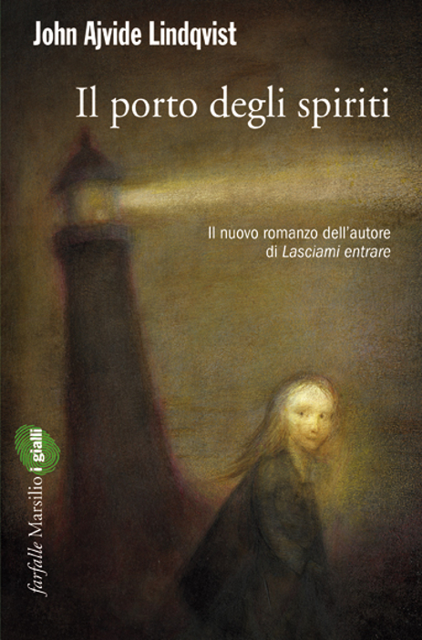

Il porto degli spiriti
(recensione di Simona Sireus)
Autore: Lindqvist John Ajvide
Editore: Marsilio
Pagine: 430
Genere: Horror
Anno Pubblicazione: 2010
Valutazione: 3,5 su 5
Anders è alla ricerca di sua figlia Maja e si reca nel luogo dove, anni prima, è scomparsa.
Scoprirà molte analogie tra le sparizioni di altre persone avvenute nello stesso luogo: l'isola di Domarö, un'isola dannata il cui mare, periodicamente, si prende un tributo umano tra i suoi abitanti.
La vita felice e perfetta di Anders e della sua famiglia viene colpita dalla tragica sparizione della figlia Maja di sei anni. La famiglia è in gita al faro dell’isola di Domarö, attorno a loro si estende solo neve e ghiaccio ma la bambina, in tutto quel candore, intravvede qualcosa che la incuriosisce. La mostra al padre che però non la vede, forse è distratto o forse non la può vedere.
Poco dopo, misteriosamente, la bambina sparisce nel nulla, nessuna impronta, nessuna traccia attorno a loro a giustificarne l’allontanamento: solo acqua, neve e ghiaccio. Le ricerche non portano a nulla e i due genitori, non reggendo il peso del dolore, finiscono per separarsi.
Qualche anno dopo Anders, ormai alla deriva e quasi alcolizzato, torna sull’isola, nella stessa casa dove ha vissuto con la famiglia prima dell’incidente. Qui accadono dei fatti inspiegabili che gli fanno credere che la figlia stia cercando di mettersi in contatto con lui.
Altri personaggi che lo affiancano nella ricerca sono due ottuagenari: Simon e Anna Greta, la nonna di Anders e il suo compagno che convoleranno a nozze dopo una lunga relazione rigorosamente vissuta in due abitazioni separate, come vicini di casa. Le loro storie personali sono davvero molto avvincenti: lei descritta come una domma forte, determinata, dal passato avventuroso che in gioventù solcava i mari in attività di contrabbando; lui un prestigiatore di strada, inizialmente solo di passaggio nell’isola ma poi ci rimane per tutto il resto della sua vita.
Anna Greta e gli altri abitanti dell’isola sono depositari della memoria storica dei misteri del mare e delle ripetute sparizioni delle persone, conoscenze che non vuole rivelare neppure a Simon.
La storia ha molti elementi soprannaturali e mescola noir con mistero, mondi paralleli con onirismo, fantasmi del passato con mostri del presente.
Ci troviamo tutti gli elementi di un romanzo gotico ambientato nella meravigliosa natura delle isole a nord di Stoccolma, che, in qualche modo, si vendica dell’arroganza degli esseri umani nei suoi confronti. Tra vermi magici, misteri e fantasmi, l’ autore ha comunque la bravura di trasmettere il senso di inquietudine che prova chi perde una persona importante e si affanna a cercarla in una sfida contro il tempo e la natura.
Il libro scorre bene, la trama è incalzante e si infittisce senza fretta dando, in modo a volte poetico, tutto il tempo di far conoscere le sfaccettature dei vari personaggi e di affezionarsi a loro.
Purtroppo questo filo conduttore si perde un po' nella parte finale del libro, più frettolosa, nella quale invece il lettore si aspettava di veder confluire le questioni in sospeso in un epilogo che desse le dovute risposte. Peccato, davvero.